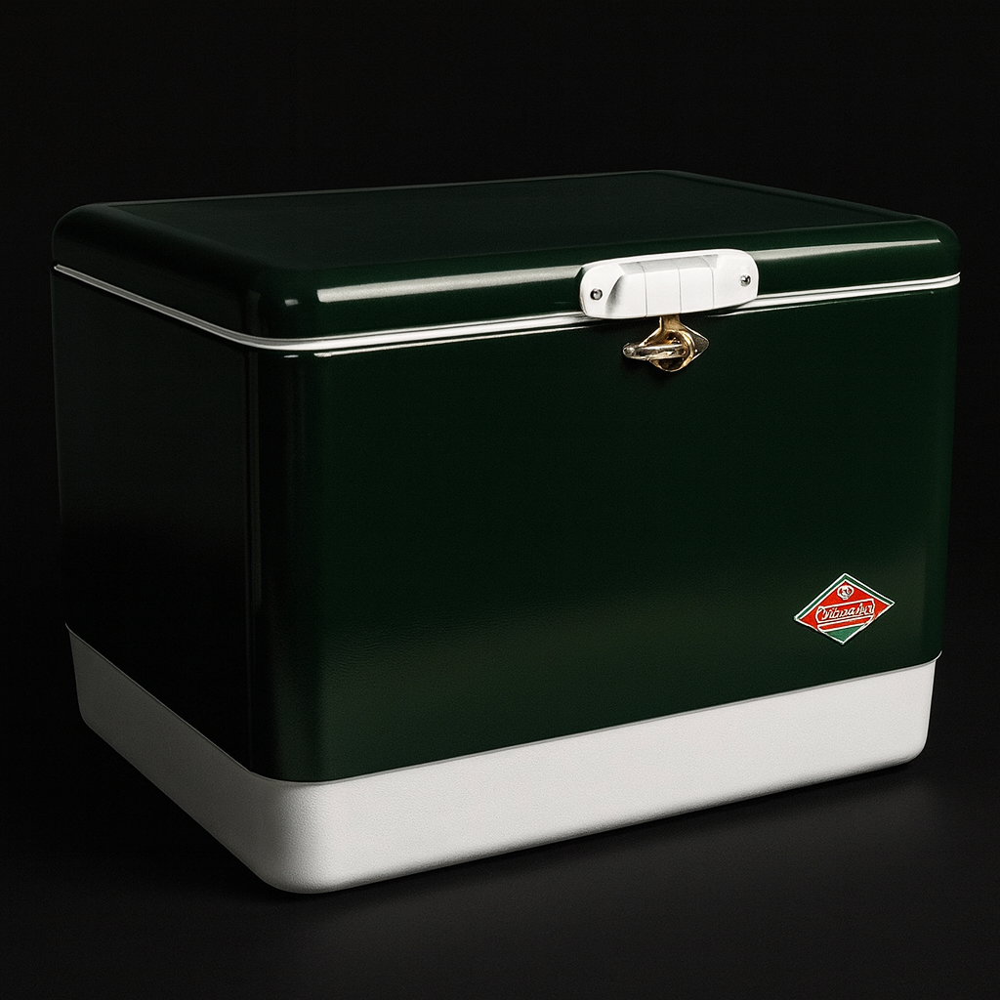
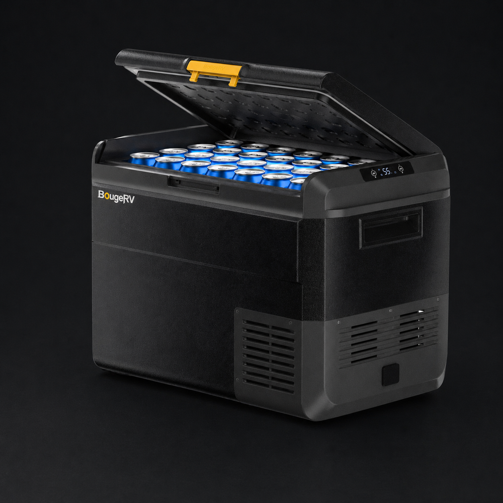
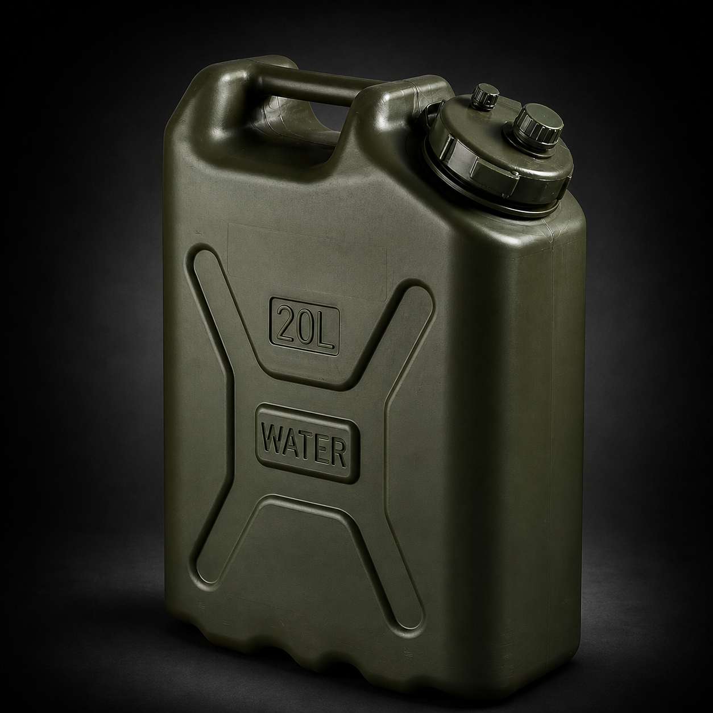
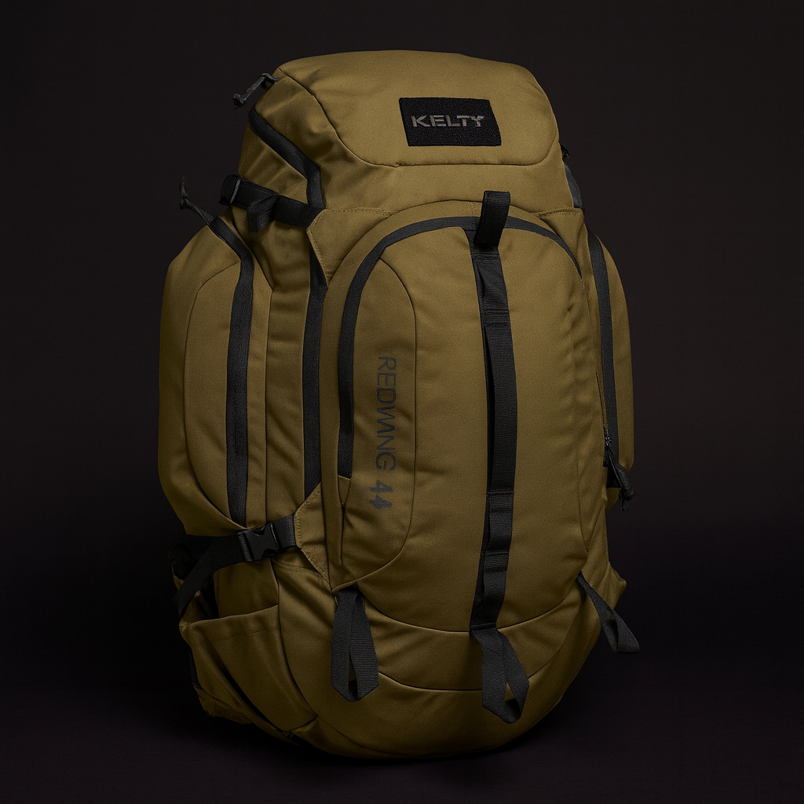
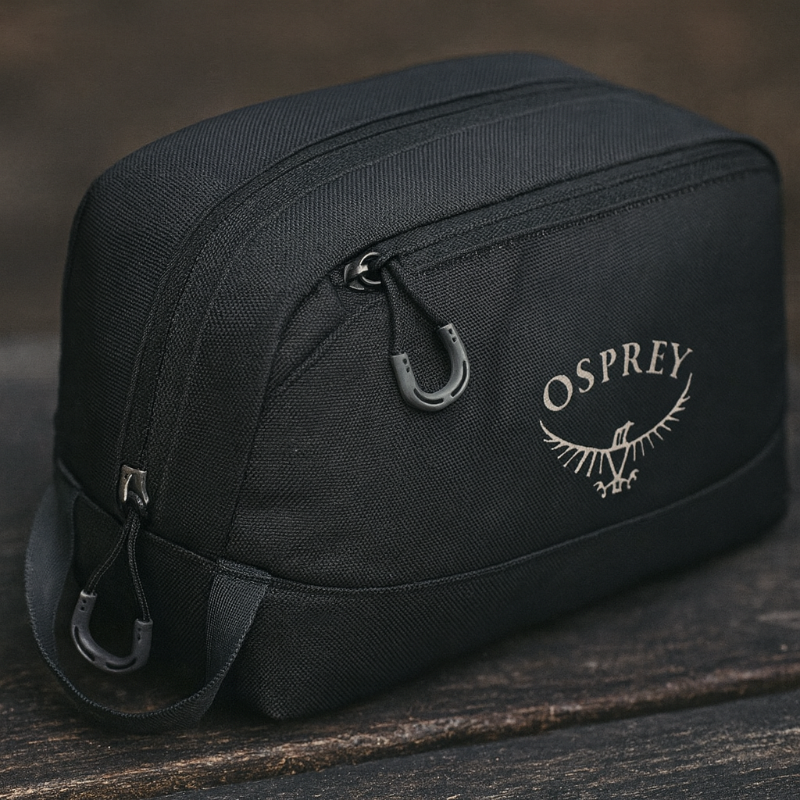
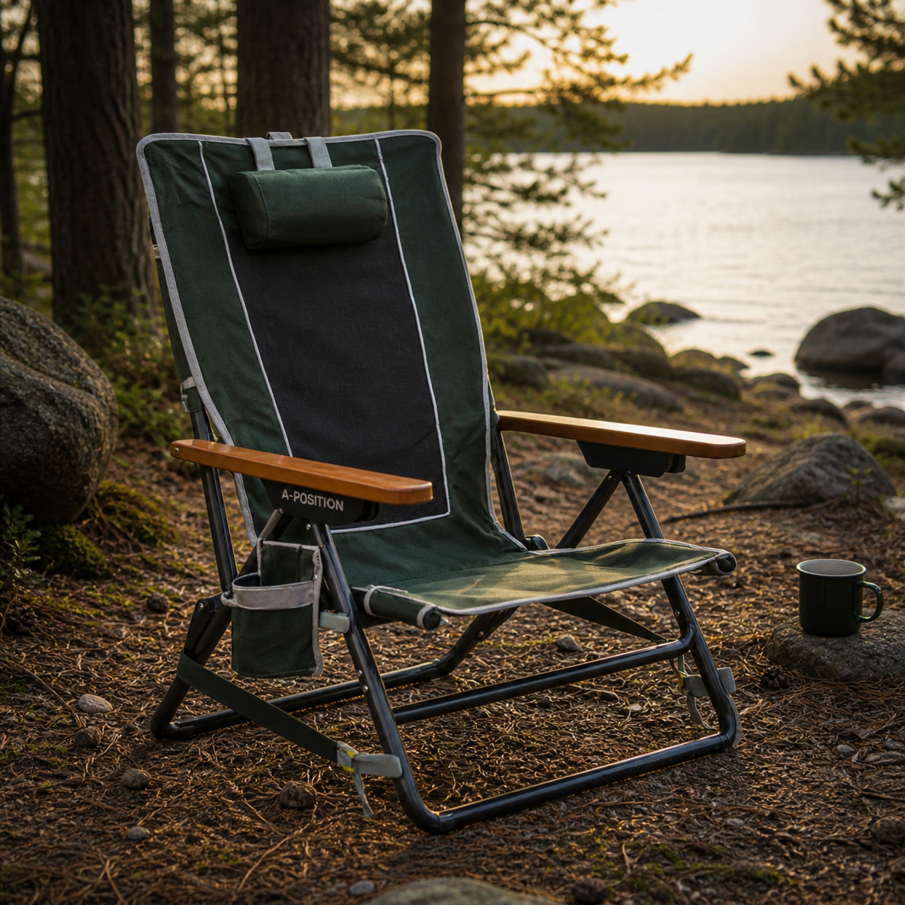
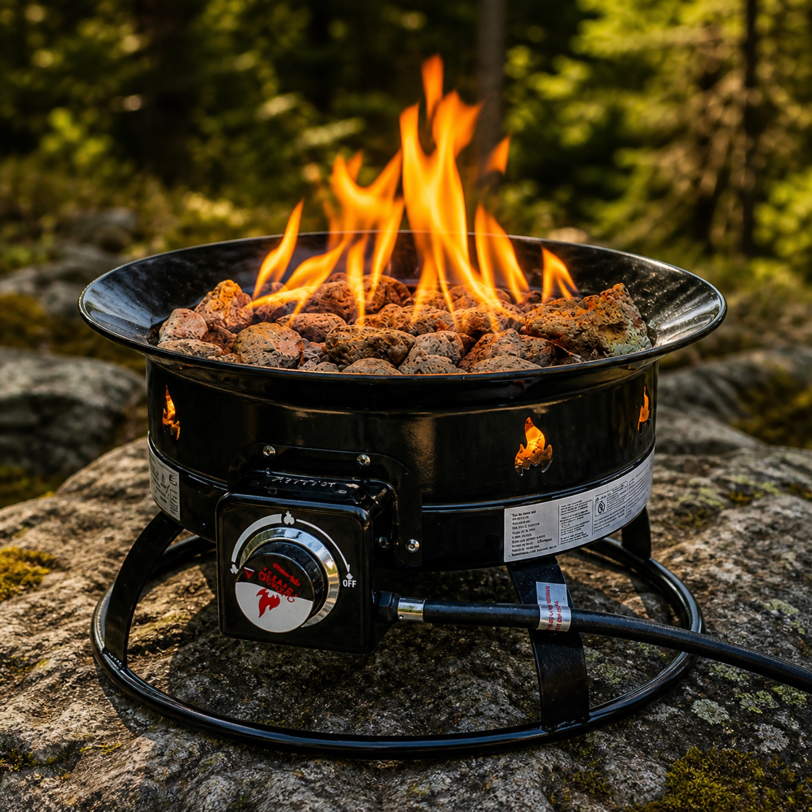
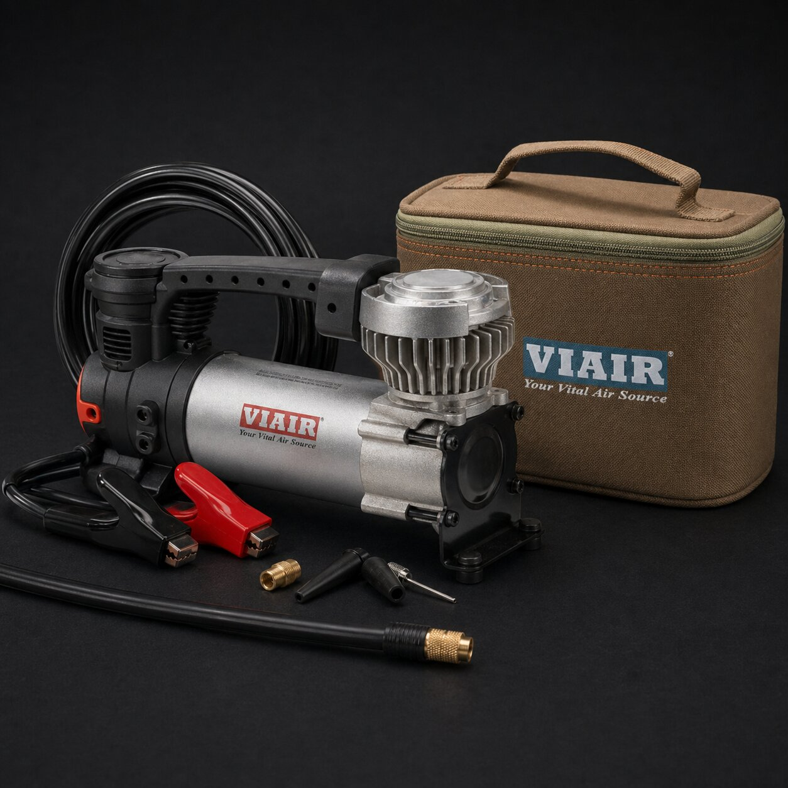

LIVE
Food, water, light, and hygiene first
Cooler or fridge, water can, lantern, stove, and toiletry kit decide whether the campsite works every hour. Those pieces beat decorative upgrades early.
 By Chris Follin
By Chris FollinGUIDE
Car camping is not backpacking with a bigger trunk. The vehicle lets you solve different problems: real food, more water, better light, a comfortable place to sit, cleaner hygiene, backup power, and tools that keep the drive home from becoming the fragile part.
Car camping stops being fun when every simple task turns into rummaging, balancing, improvising, or regretting what you brought. The best gear here makes camp feel settled fast: sleep, food, water, light, comfort, power, and a vehicle kit that can absorb normal trip problems.
The vehicle gives you capacity, but capacity turns into clutter fast. I would organize the kit around repeated campsite jobs instead of buying one item from every category.
LIVE
Cooler or fridge, water can, lantern, stove, and toiletry kit decide whether the campsite works every hour. Those pieces beat decorative upgrades early.
STAY
A chair, fire pit, and good pack are useful when they make camp calmer, cleaner, and easier to stay in. They are not useful if they only make the vehicle harder to load.
RETURN
Air, power, jump starting, recovery, and basic tools matter because the vehicle is the shelter, storage, transport, and backup plan all at once.

Heavy, yes, but food stress mostly disappears once the cooler actually performs.

The step up when ice management starts running the food side of the trip.

Simple water storage is one of the least glamorous parts of a good drive-in setup.

Adjustable area lantern for the cook table, group hangout, and home backup shelf when headlamps are not enough.

High-output bag battery for cameras, phones, laptops, and small USB gear before the problem becomes vehicle power.

44L hybrid U-zip pack for clothes, camp overflow, and rough travel when a hard bin is the wrong answer.

Four-liter countertop toiletry organizer that keeps hygiene gear visible, contained, and easier to clean after travel or camp use.

Comfort-first reclining chair for drive-in trips where the chair gets used for hours, not minutes.

Reliable, simple, and forgiving enough that setup stays boring in the best possible way.

Small truck-battery insurance that belongs in the vehicle before the dead-start problem owns the trip.

An easy campfire answer when wood restrictions, cleanup, or convenience start to matter more.

The vehicle tool that makes dirt-road tire pressure and low-tire problems much less dramatic.
I still would not buy this stuff in random order. The best version of a car-camping setup is the one where the evening works, food and water are handled, and nothing important feels fragile, half-thought-through, or weirdly annoying to store between trips.
START HERE
The tent still matters more than the lantern, chair, or cooler. If sleep is bad, the weekend feels like work no matter how nice the site is.
THEN THIS
A good light, a stable stove, water capacity, and a cooler or fridge you trust change camp fast. Once dinner and cleanup are easy, the whole site starts feeling better.
AFTER THAT
A great chair, propane fire pit, power bank, and vehicle tools are not first purchases, but they are very worth it once the core kit is solid.